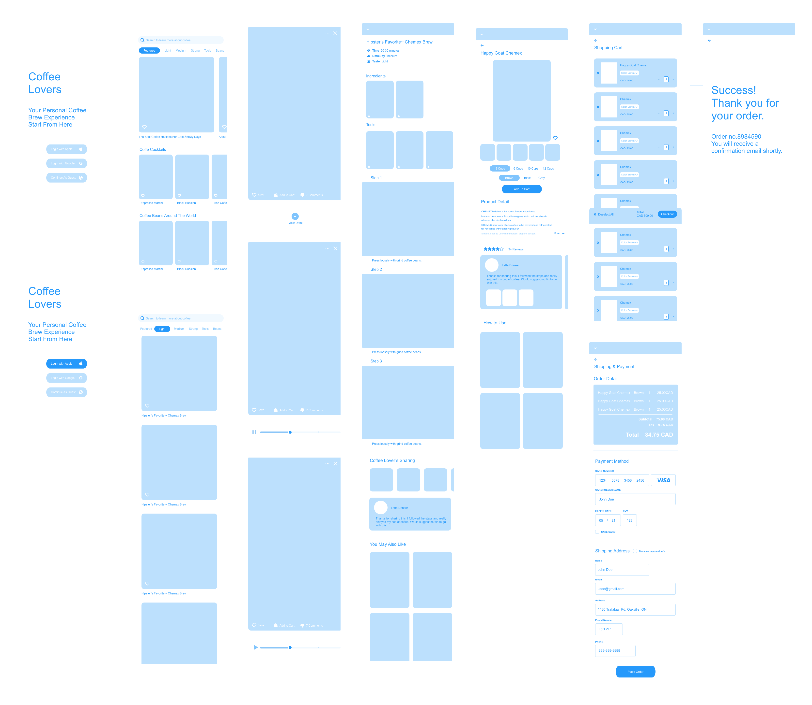

03 User Persona
We created a persona to understand what an potential user would be like. Likewise, we identified her goal, interests, and painpoints.

Bean & Barista is a one-stop-shop app for all coffee lovers who would like to explore new ways of coffee brewing. By simply following the instructions in the mobile or iWatch app, they can experiment with multiple ways of coffee making in the comfort of their homes. Apart from that, they can also purchase kitchen appliances mentioned in the instructions directly from the app's e-commerce store.
Currently, there is no app in the app store that provides coffee lovers all the information they may need to brew a delicious cup of coffee.
Meanwhile, there is also no iWatch app that presents different ways of coffee making and
guide them along with the steps.
Most of the competitors' sites we encountered have three significant problems:
1 | Small amount of coffee brewing receipes which never get updated.
2 | Customers cannot purchase coffee brewing appliances in the app.
3 |
No iWatch app incorporated.
We created a persona to understand what an potential user would be like. Likewise, we identified her goal, interests, and painpoints.
“An app that provides all the latest information about coffee and gives user step-by-step instructions on coffee brewing. It would also allow users to purchase appliances mentioned in the instructions directly from its e-commerce site.”

We identified the roadmap that would provide an optimized user experience. Afterwards, we determined the site information structure, along with its data schema.

Wireframes were then discussed, drawn, and agreed upon for the entire app. Users would be able to determine which coffee brewing method they would like to learn based on their taste preference. After selection, they are guided by step-by-step video instructions. After they finished the instructions, users can scroll up and revisit the instruction for each step. Afterwards, if they wish, they could order appliances mentioned in the video directly from the app.

“ In the next step, we applied logics between the pages. We also added missing pages and deleted repeated content. "

The color palette we selected makes sure that the app design delivers "artisan" & "craftsmanship" senses.
We chose a serif font - "Made Mirage", as our primary typography and a san-serif font - "Rounded Elegance", as our second
typography to strike a balance between the retrospective and modern styles.
We did some research on the vintage logo design style and figured out the core elements. We then combined all the identified features such as the double circle outline, the cross, and the tagline "since xxx" to create our new logo. Meanwhile, we created two logo versions for both black and white backgrounds.